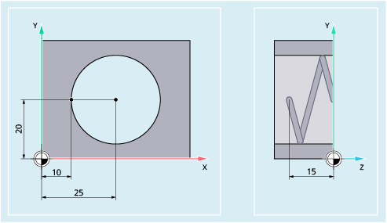

These commands are used in the NC program to set the feedrates for all axes involved in the machining sequence.
| Inverse-time feedrate | |
Unit: | [r/min] | |
| Linear feedrate | |
Unit: | [mm/min], [inch/min] or [degrees/min] | |
| Revolutional feedrate | |
Unit: | [mm/revolution] or [inch/revolution] | |
The revolutional feedrate can be derived from a master spindle, any other spindle or a rotary axis. | ||
| Address to specify the feedrate Active for all path axes or only those selected with FGROUP. | |
| Predefined procedure to define the path axes to which the F-programmed feed rate should refer | |
| Channel axis names of the path axes | |
Type: | AXIS | |
| Keyword to program the effective radius (reference radius) of a rotary axis specified under FGROUP FGREF must be programmed for each rotary axis specified under FGROUP. | |
| Name of the rotary axis | |
Type: | AXIS | |
| Limit velocity for synchronized/path axes One FL value can be programmed per axis (channel axis, geometry axis or orientation axis) | |
Unit: | The unit set with G94 applies. | |
The following example is intended to demonstrate the effect of FGROUP on the path and feedrate. The variable $AC_TIME contains the time of the block start in seconds. It can only be used in synchronized actions.
| Program code | Comment |
|---|---|
| N100 G0 X0 A0 | |
| N110 FGROUP(X,A) | |
| N120 G91 G1 G710 F100 | ; Feedrate = 100mm/min or 100 degrees/min |
| N130 DO $R1=$AC_TIME | |
| N140 X10 | ; Feedrate = 100 mm/min, path = 10 mm, R1 = approx. 6 s |
| N150 DO $R2=$AC_TIME | |
| N160 X10 A10 | ; Feedrate = 100 mm/min, path = 14.14 mm, R2 = approx. 8 s |
| N170 DO $R3=$AC_TIME | |
| N180 A10 | ; Feedrate = 100 degrees/min, path = 10 degrees, R3 = approx. 6 s |
| N190 DO $R4=$AC_TIME | |
| N200 X0.001 A10 | ; Feedrate = 100 mm/min, path = 10 mm, R4 = approx. 6 s |
| N210 G700 F100 | ; Feedrate = 2540 mm/min or 100 degrees/min |
| N220 DO $R5=$AC_TIME | |
| N230 X10 | ; Feedrate = 2540 mm/min, path = 254 mm, R5 = approx. 6 s |
| N240 DO $R6=$AC_TIME | |
| N250 X10 A10 | ; Feedrate = 2540 mm/min, path = 254.2 mm, R6 = approx. 6 s |
| N260 DO $R7=$AC_TIME | |
| N270 A10 | ; Feedrate = 100 degrees/min, path = 10 degrees, R7 = approx. 6 s |
| N280 DO $R8=$AC_TIME | |
| N290 X0.001 A10 | ; Feedrate = 2540 mm/min, path = 10 mm, R8 = approx. 0.288 s |
| N300 FGREF[A]=360/(2*$PI) | ; Set 1 degree = 1 inch via the effective radius |
| N310 DO $R9=$AC_TIME | |
| N320 X0.001 A10 | ; Feedrate = 2540 mm/min, path = 254 mm, R9 = approx. 6 s |
| N330 M30 |
The path velocity of the path axes is reduced if synchronized axis Z reaches the limit velocity.
| Program code | |
|---|---|
| N10 G0 X0 Y0 | |
| N20 FGROUP(X) | |
| N30 G1 X1000 Y1000 G94 F1000 FL[Y]=500 | |
| N40 Z-50 |
Path axes X and Y traverse with the programmed feedrate, the infeed axis Z is a synchronized axis.
| Program code | Comment |
|---|---|
| N10 G17 G94 G1 Z0 F500 | ; Feed of the tool. |
| N20 X10 Y20 | ; Approach the starting position. |
| N25 FGROUP(X,Y) | ; Axes X/Y are path axes, Z is a synchronized axis. |
| N30 G2 X10 Y20 Z-15 I15 J0 F1000 FL[Z]=200 | ; On the circular path, the feedrate is 1,000 mm/min, traversing in the Z direction is synchronized. |
| ... | |
| N100 FL[Z]=$MA_AX_VELO_LIMIT[0,Z] | ; The limit speed is deselected by reading the speed from the MD. Read the value from the MD. |
| N110 M30 | ; End of program |
See also:
Feedrate (G93, G94, G95, F, FGROUP, FL, FGREF): Further information